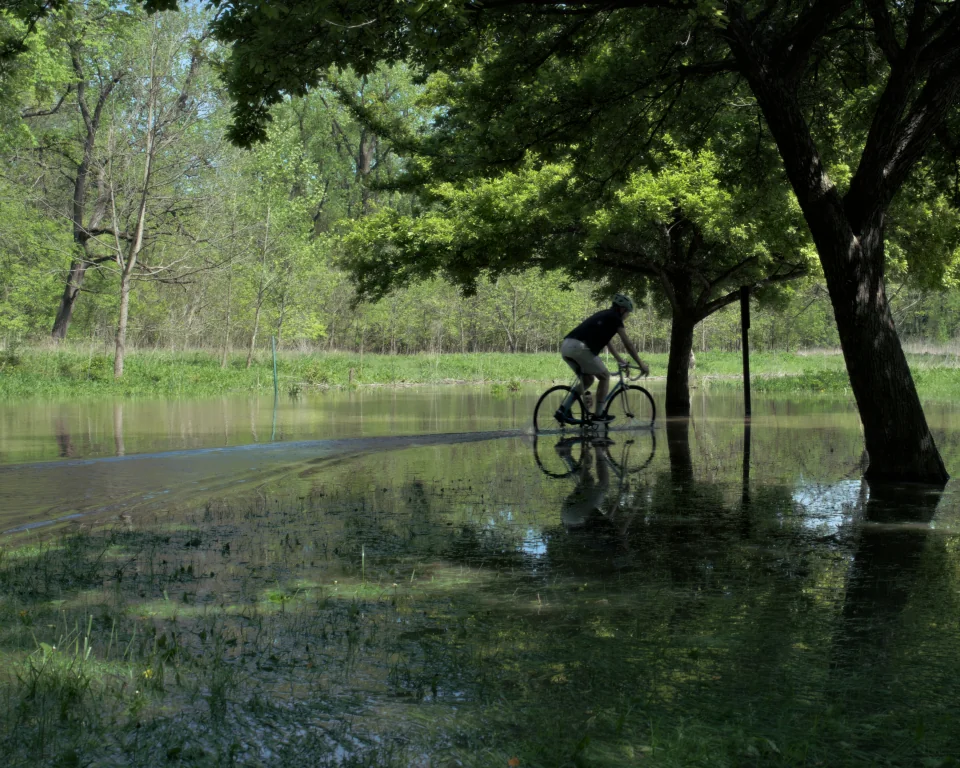
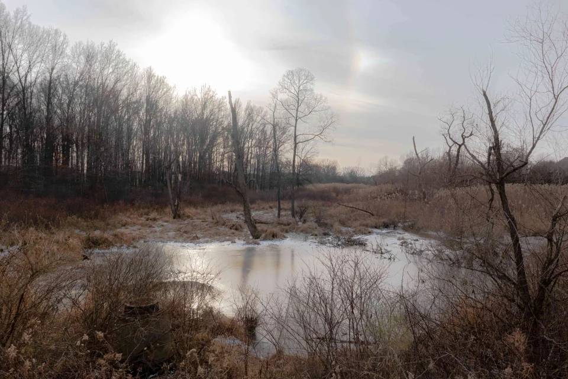
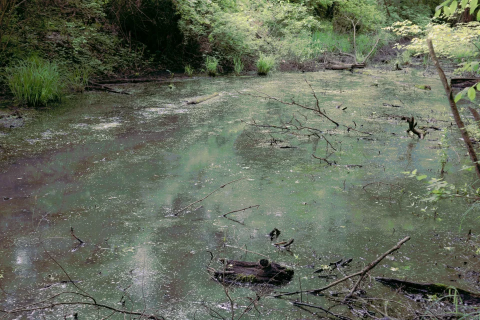
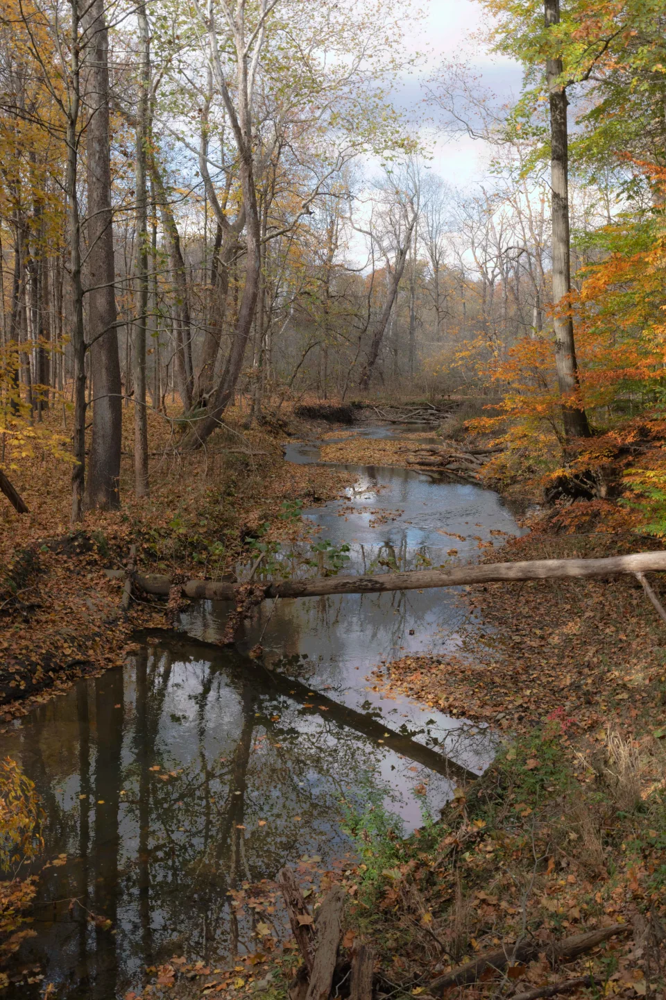
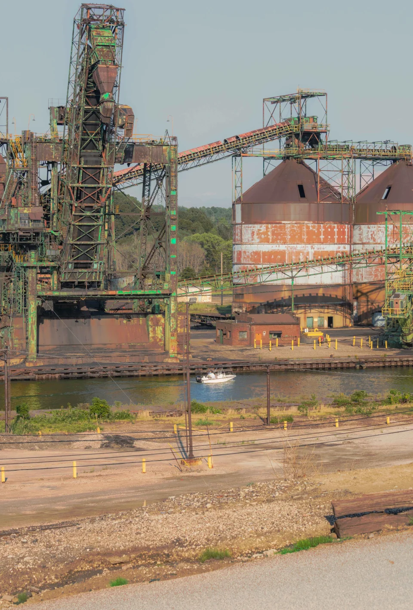
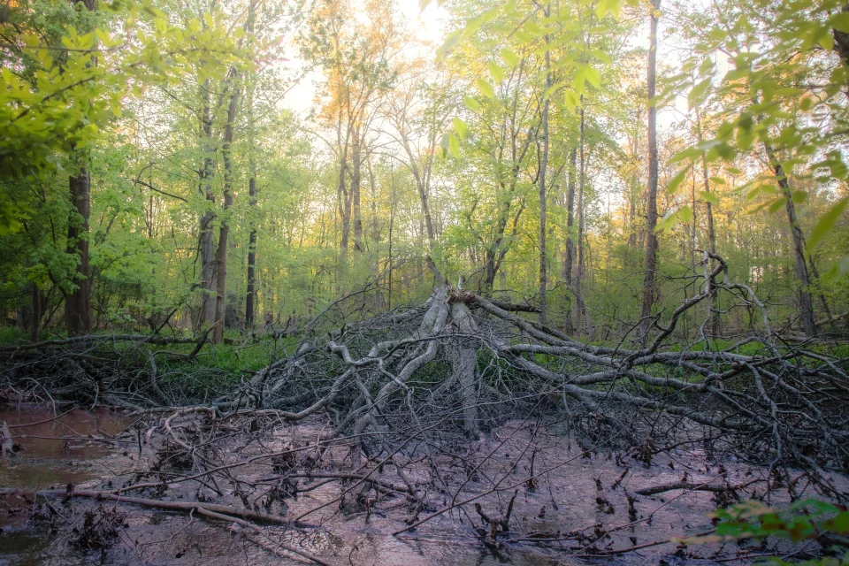

May 2025 in Columbus, OH, USA.

December 2022 in Youngstown, OH, USA.

May 2022 in Youngstown, OH.

May 2022 in Youngstown, OH.

November 2021 in Youngstown, OH.

July 2021 in Conneaut, OH.

July 2021 in Conneaut, OH.

June 2021 in Youngstown, OH.

May 2021 in Youngstown, OH.